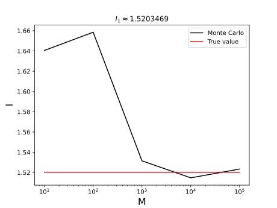
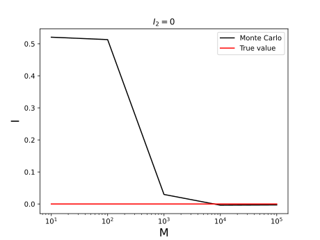
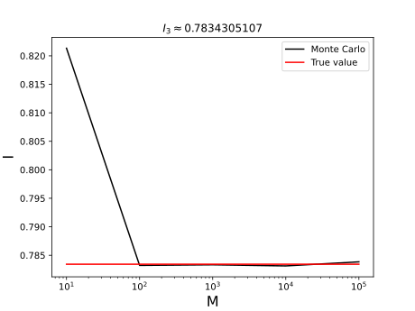
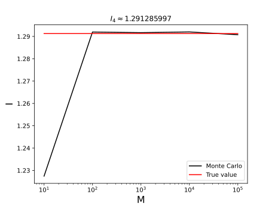
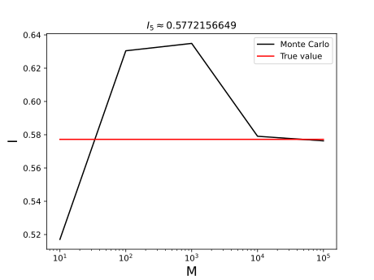
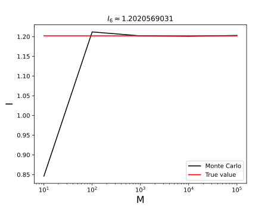

1D integrals
Integrals respect to Gaussian distribution
Here we consider integrals of the form $$ I = \int_{-\infty}^{\infty}f(x)e^{-\frac{(x-\mu)^{2}}{2\sigma^{2}}}dx.$$ If we define the density \(\rho(x)\) distributed as a Gaussian \(\mathcal{N}(\mu,\sigma^{2})\). Then, calculate the previous integral is equivalent to calculate the next expectation $$ \int_{-\infty}^{\infty}f(x)e^{-\frac{(x-\mu)^{2}}{2\sigma^{2}}}dx = (2\pi\sigma^{2})^{1/2}\mathbb{E}^{\rho}[f].$$
Example: Consider the integrals
$$I_{1} = \int_{-\infty}^{\infty}\cos(x)e^{-\frac{x^{2}}{2\sigma^{2}}}dx \quad \text{and} \quad I_{2} = \int_{-\infty}^{\infty}\sin(x)e^{-\frac{x^{2}}{2\sigma^{2}}}dx$$
The analytical solutions are given by the real and imaginary parts of the complex integral
$$\int_{-\infty}^{\infty}e^{ix}e^{-\frac{x^{2}}{2\sigma^{2}}}dx,$$
and the results are given by the next quantities:
$$I_{1} = \sqrt{2\pi}\sigma\exp\left(-\frac{\sigma^{2}}{2} \right) \quad \text{and} \quad I_{2} = 0.$$
The Monte Carlo approximation of this problem was performed with ensembles of size "\(M = 10, 100, 1000, 10000, 100000\)" and a parameter \(\sigma = 1\). The results are presented in the next figures:
 
It is clear the convergence in both integrals when \(M = 10000\).
Integrals respect to Uniform distribution
This class consists on integrals of the form:
$$ I = \int_{a}^{b}f(x)dx.$$
In this case, we can define the density \(\rho(x) = (b-a)^{-1}\mathbb{I}_{[a,b]}(x)\), which is distributed as uniform in \([a,b]\) (denoted as \(\mathcal{U}([a,b])\)). Then, the integral can be represented as an expectation of the form:
$$ \int_{a}^{b}f(x)dx = (b-a)\int_{-\infty}^{\infty}f(x)\rho(x)dx = (b-a)\mathbb{E}^{\rho}[f].$$
Example: The Sophomore's dream problem (see e.g., [2]) is given by the next integrals
$$ I_{1} = \int_{0}^{1}x^{-x}dx \quad \text{and} \quad I_{2} = \int_{0}^{1}x^{x}dx.$$
The particularity of this problem is its "beautiful solution", which is given by the series
$$ \int_{0}^{1}x^{-x}dx = \sum_{n=1}^{\infty}n^{-n} \approx 1.291285997 $$
and
$$ \int_{0}^{1}x^{x}dx = -\sum_{n=1}^{\infty}(-n)^{-n} \approx 0.7834305107.$$
Here we compare the analytical solution with MC estimations. The parameters of the uniform distribution are \(a = 0\), and \(b = 1\). Now, the next figures show the estimations for \(M = 10,100, 1000\) and \(10000\) samples.
 
In this case we see fast convergence and a good approximation with \(M = 100\).
Integrals respect to Gamma distribution
In this case, we have integrals of the form
$$ I = \int_{0}^{\infty}x^{\alpha-1}e^{-\beta x}f(x)dx, \quad \text{with} \quad (\alpha,\beta)\in (0,\infty)\times (0,\infty).$$
Let us remark first that the Gamma distribution has a density function given by the expression
$$ \rho(x) = \frac{\lambda^{\alpha}}{\Gamma(\alpha)}x^{\alpha-1}e^{-\beta x}.$$
Then, with an ensemble \(\lbrace X_{k} \rbrace_{k=1}^{M}\) of i.i.d. distributed Gamma samples, the integral is approximated as follows:
$$ I = \frac{\Gamma(\alpha)}{\lambda^{\alpha}} \mathbb{E}^{\rho}[f].$$
As examples, we consider two integrals for estimate universal mathematical constants.
Example 1: The first one is the Euler-Mascheroni constant (see e.g., [3]), which is given by the value
$$\gamma = 0.577215664901532860606512090082...$$
This constant appears constantly in mathematics in some fields as analysis and number theory. The constant has been also used in other science fields as physics (see e.g., [5]). One way to calculate is with the next integral (see e.g., [6])
$$\gamma = -\int_{0}^{\infty}e^{-x}\log(x).$$
Here the parameters of the Gamma distribution are \( \alpha = 1 \) and \( \beta = 1 \), while the objective function is \( f(x) = \log(x) \).
The approximation is presented in the next figure

Here, we see a good approximation when \(M = 10000\).
Example 2: The second universal constant estimated here is the The first one is the Apéry's constant (see e.g., [1]), which is an evaluation of the Riemman's Zeta function \(\zeta\), and it is given by the value:
$$\zeta(3) = 1.2020569031595942853997381615114...$$
In mathematics, this constant appears in number theory, probability and analysis. While in physics it is used in quantum electrodynamics (see e.g., [4]). This constant can be calculated in terms of the Digamma function \(\psi\) as follows:
$$\zeta(3) = -\frac{1}{2}\psi^{2}(1) = \frac{1}{2}\int_{0}^{\infty}\frac{x^{2}e^{-x}}{1-e^{-x}}dx.$$
In order to estimate this integral via MC, we define the objective function as follow
$$f(x) = \frac{1}{2}\frac{x}{1-e^{-x}},$$
and the parameters of the Gamma distribution are \(\alpha = 2\) and \(\beta = 1\).
The MC approximation is ploted on next figure

In this case, the integral via MC is well approximated with \(M = 100\)
Code
Github
Bibliography
[1] Berndt, B. C., & Berndt, B. C. (1985). Ramanujan's theory of divergent series. Ramanujan's Notebooks: Part I, 133-149.
[2] Borwein, J.M., Bailey, D.H., Girgensohn, R., Bailey, D.H., & Borwein, J.M. (2004). Experimentation in Mathematics: Computational Paths to Discovery (1st ed.). A K Peters/CRC Press.
[3] Conway, J. H., & Guy, R. K. (1996). The Euler-Mascheroni Number. The Book of Numbers. (pp. 260-261). Berlin: Springer Verlag.
[4] Dittrich, W. (2019). The Role of Riemann's Zeta Function in Mathematics and Physics. Universe, 5(3), 79.
[5] Sukenik, M., Sima, J., k, M.S., & ima, J. (2018). The Euler - Mascheroni Constant and Its Application in Physical Research. viXra.
[6] Whittaker E T, Watson G N (1952) A course of modern analysis. University Press, Cambridge.